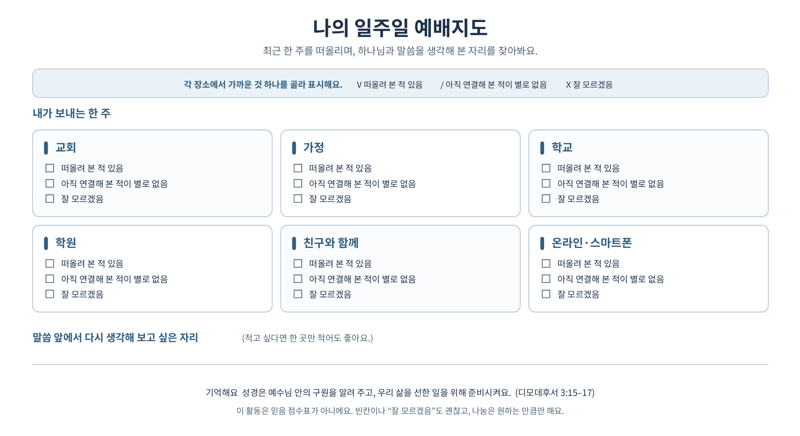

이번 주 설교 본문
디모데후서 3:14–17
14 그러나 너는 배우고 확신한 일에 거하라 너는 네가 누구에게서 배운 것을 알며
15 또 어려서부터 성경을 알았나니 성경은 능히 너로 하여금 그리스도 예수 안에 있는 믿음으로 말미암아 구원에 이르는 지혜가 있게 하느니라
16 모든 성경은 하나님의 감동으로 된 것으로 교훈과 책망과 바르게 함과 의로 교육하기에 유익하니
17 이는 하나님의 사람으로 온전하게 하며 모든 선한 일을 행할 능력을 갖추게 하려 함이라
설교 한 눈에 보기
성경은 예수님 안에 있는 구원을 알려 주고, 그 은혜를 받은 우리가 선한 일을 하도록 삶을 비춰 줍니다.
구원을 착한 행동의 보상으로 여기지 않고, 성경이 예수님 안의 구원을 가리킨다는 점을 함께 살펴봅니다. 예배지도를 신앙 점수로 사용하지 않고, 말씀과 일상을 평가 없이 연결하도록 돕습니다.
종교개혁이 다시 던진 두 질문을 듣고, 디모데후서 3장 15–17절에서 성경과 구원, 선한 삶의 관계를 살펴봅니다. 이후 내 일주일의 여러 자리를 떠올리고, 말씀을 따라 다시 생각해 보고 싶은 한 곳을 나눕니다.
설교 핵심 흐름
종교개혁은 교회 간판을 바꾸거나 다른 사람의 잘못을 지적하는 데 그치지 않았습니다. “구원은 어디에서 오는가?”, “교회는 무엇을 기준으로 믿고 가르쳐야 하는가?”라는 근본적인 질문을 다시 던졌습니다.
면벌부는 공식 가르침에서 죄의 용서 자체와 죄가 남긴 형벌의 면제를 구분했지만, 홍보와 판매 과정에서는 구원이나 죽은 이의 고통을 돈으로 해결할 수 있다는 인상을 줄 수 있었습니다. 루터와 종교개혁자들은 구원이 돈이나 사람의 공로에서 오는지 성경 앞에서 다시 물었습니다.
성경은 그리스도 예수 안에 있는 믿음으로 말미암아 구원에 이르는 지혜를 줍니다(15절). 성경을 안다는 것은 내용을 많이 외우는 데서 끝나지 않고, 성경이 가리키는 예수님과 그분 안의 구원을 알고 믿는 것입니다.
칼뱅은 교회가 말씀에 따라 예배와 교육, 직분과 돌봄을 살피도록 힘썼습니다. 종교개혁은 “저 사람들이 틀렸다”에서 멈추지 않고 “우리 교회는 말씀을 따라가고 있는가?”를 묻는 일이기도 했습니다. 오늘은 칼뱅의 제도를 그대로 복사하기보다 교회와 신앙을 말씀에 비추어 살피는 태도를 배웁니다.
성경은 가르치고 책망하고 바르게 하며 의로 교육하고, 하나님의 사람이 선한 일을 행할 준비를 갖추게 합니다(16–17절). 선한 일은 구원의 값을 지불하는 행동이 아니라, 예수님 안의 은혜를 받은 사람이 감사로 맺어 가는 열매입니다. 말씀은 학교와 가정, 관계와 선택도 비춥니다.
성찬은 한 주 동안 잘 살았다는 성적표가 아닙니다. 우리를 위해 몸을 내어 주시고 피 흘리신 예수님의 은혜를 기억하고 의지하는 자리입니다. “내가 얼마나 잘했나?”보다 “예수님께서 나를 위해 무엇을 하셨는가?”를 바라봅니다.
교사가 더 알아두면 좋은 성경 지식
종교개혁: 말씀 앞에서 복음과 교회를 다시 살피기
정의: 16세기 서유럽 교회에서 복음과 교회의 가르침을 성경에 비추어 개혁하려 했던 움직임입니다.
의미: “구원은 어디에서 오는가?”, “교회는 무엇을 기준으로 가르쳐야 하는가?”라는 질문을 다시 던졌습니다. 개혁은 남의 잘못만 지적하는 것이 아니라 자신들의 교회와 가르침도 말씀 아래 두는 태도를 포함합니다.
학생용 설명: “종교개혁은 교회와 신앙이 성경에서 멀어지지 않았는지 다시 살펴보려는 움직임이야.”
연결 말씀: “모든 성경은 하나님의 감동으로 된 것으로 교훈과 책망과 바르게 함과 의로 교육하기에 유익하니” (디모데후서 3:16)
은혜와 믿음: 예수님 안에서 주시는 구원
정의: 은혜는 하나님께서 받을 자격을 쌓지 못한 사람에게 거저 베푸시는 사랑과 선물입니다. 믿음은 예수님을 의지하고 그분이 주시는 구원을 받아들이는 것입니다.
의미: 선행은 구원의 값을 치르는 수단이 아닙니다. 하나님께서 예수님 안에서 먼저 주시는 구원에 대한 감사의 응답입니다. 가상 사례는 특정 교파의 공식 가르침을 묘사하지 않으며, 행위로 구원을 얻는다고 여기는 일반적인 오해를 보여 줍니다.
학생용 설명: “착한 일을 많이 해서 하나님께 구원을 사는 게 아니야. 하나님이 예수님 안에서 주신 구원을 믿고, 감사해서 선한 일을 배우며 살아가는 거야.”
연결 말씀: “성경은 능히 너로 하여금 그리스도 예수 안에 있는 믿음으로 말미암아 구원에 이르는 지혜가 있게 하느니라” (디모데후서 3:15)
성경의 역할: 구원을 알리고 삶을 가르침
정의: 성경은 하나님께서 교회를 가르치시고, 잘못된 길을 바로잡으며, 의로운 삶을 배우게 하시는 말씀입니다.
의미: 15절은 성경이 예수님 안의 구원을 가리킨다고 말하고, 16–17절은 성경이 구원받은 사람을 선한 일을 위해 준비시킨다고 말합니다. 그러므로 성경 읽기는 지식 확인이나 다른 사람 비판으로 끝나지 않고 우리 삶을 비춥니다.
학생용 설명: “성경은 예수님 안의 구원을 알려 주고, 학교와 가정과 친구 관계에서 어떻게 살아갈지도 가르쳐 줘.”
연결 말씀: “이는 하나님의 사람으로 온전하게 하며 모든 선한 일을 행할 능력을 갖추게 하려 함이라” (디모데후서 3:17)
성찬: 내 공로가 아니라 그리스도의 은혜를 기억하는 식탁
정의: 성찬은 예수님께서 제자들에게 주신 떡과 잔으로 그분의 몸과 피, 새 언약을 기억하는 예식입니다.
의미: 성찬은 한 주의 신앙생활 점수를 내는 자리가 아니라 예수님께서 먼저 베푸신 은혜를 기억하고 의지하는 자리입니다. 참여 자격과 절차는 교회의 안내를 따릅니다.
학생용 설명: “성찬은 내가 얼마나 잘했는지 자랑하는 자리가 아니라, 예수님이 우리를 위해 하신 일을 기억하는 자리야.”
연결 말씀: “이것은 너희를 위하는 내 몸이니 이것을 행하여 나를 기념하라” (고린도전서 11:24)
소그룹 나눔 진행 가이드
활동 1 · 구원은 어디에서 올까요?
가상 사례를 읽고 디모데후서 3장 15–17절에서 구원과 선한 삶의 관계를 찾아봅니다. 사례를 특정 교파의 입장으로 다루지 않습니다.
“구원받으려면 하나님께 인정받을 만큼 착하게 살아야 해. 예배도 빠지지 않고 좋은 일을 많이 해야 천국에 갈 수 있어.”
“구원은 예수님 안에서 하나님이 주시는 은혜야. 성경은 그 구원을 알려 주고, 구원받은 사람이 선한 일을 하도록 가르쳐.”
이 사례는 특정 교파의 공식 입장을 나타내지 않습니다. 사람이 착한 행동으로 구원을 얻을 수 있다고 생각하는 일반적인 오해를 보여 주는 가상 상황입니다.
오늘 본문은 구원이 어디에서 온다고 말하나요?
15절에서 구원이 예수님과 믿음에 어떻게 연결되는지 찾아봅니다.
“예수님을 믿는 것과 연결돼요.” “하나님이 주시는 은혜 같아요.” “아직 잘 모르겠어요.”
본문에서 답을 직접 찾게 합니다. “구원과 예수님을 연결하는 표현을 같이 찾아볼까?”라고 안내해 주세요.
선한 일은 구원을 얻기 위한 조건일까요, 구원받은 사람이 살아가도록 성경이 가르치는 삶일까요?
15절의 구원과 16–17절의 가르침을 연결합니다.
“착한 일을 해서 구원을 사는 건 아닌 것 같아요.” “성경이 구원받은 뒤에 어떻게 살지 가르쳐요.” “잘 모르겠어요.”
선한 일을 가볍게 여기지 않으면서 은혜와 순종의 순서를 분명히 해 주세요. 하나님이 예수님 안에서 먼저 구원을 주시고, 성경은 그 은혜를 받은 사람이 어떻게 살아갈지 가르친다고 정리합니다.
“종교개혁자들은 돈이나 자기 공로로 구원을 얻는 것처럼 받아들여질 수 있는 가르침을 성경에 비추어 다시 살폈어요. 오늘은 특정한 사람이나 교파를 비난하기보다 성경이 구원을 어떻게 설명하는지 함께 보는 거예요.” 면벌부 질문은 설교의 역사 흐름에 맞게 설명하되, 가상 사례를 특정 교파와 동일시하거나 교파 비교로 확장하지 않습니다.
활동 2 · 나의 일주일 예배지도
교회, 가정, 학교, 학원, 친구 관계, 온라인·스마트폰 시간 등 일상의 자리를 평가 없이 돌아봅니다.

각 영역을 ① 말씀이나 하나님을 떠올리기 쉬웠던 곳 ② 하나님과 연결해 생각해 본 적이 별로 없는 곳 ③ 아직 잘 모르겠는 곳 가운데 하나로 표시합니다. 기호나 색을 사용해도 좋습니다. 좋음·나쁨이나 믿음 점수처럼 읽히는 표시는 피합니다.
“이 지도는 하나님을 얼마나 잘 믿었는지 표시하는 성적표가 아니에요. 어떤 곳에서는 하나님을 떠올려 본 적이 있고, 어떤 곳에서는 아직 생각해 본 적이 별로 없었다는 걸 살펴보는 지도예요. 빈 곳이 있어도 괜찮고, 잘 모르겠다고 표시해도 괜찮아요.”
“오늘 본문은 우리가 먼저 잘해서 구원받는다고 말하지 않아요. 성경은 예수님 안에 있는 구원을 먼저 알려 줘요. 우리가 그린 지도는 하나님께 사랑받을 자격이 있는지를 보여 주는 게 아니에요. 그 은혜를 알고 살아갈 우리의 일상에는 어떤 자리들이 있는지 돌아보는 거예요.” “하나님께서 먼저 내게 주신 것은 무엇일까?”를 덧붙일 수 있지만, 답을 강요하지 않습니다.
이번 주에 말씀을 따라 다시 생각해 보고 싶은 내 생활의 자리는 어디인가요?
자신의 지도를 공개하지 않아도 됩니다. 구체적인 결심이나 설명을 하지 않아도 되고 “아직 잘 모르겠어요”라고 해도 괜찮습니다.
“친구와 있을 때를 생각해 보고 싶어요.” “온라인에서 말할 때요.” “아직 잘 모르겠어요.”
말씀과 일상의 연결을 한 자리에서 생각하도록 돕습니다. “그 자리가 마음에 남은 이유가 있을까? 말하고 싶은 만큼만 나눠도 괜찮아.”라고 묻고, 바로 조언하거나 결심을 요구하지 않습니다.
마무리 · 다음 주 성찬을 바라보며
성찬과 오늘의 활동을 그리스도의 은혜로 연결합니다.
성찬 참여 자격이나 절차는 교사가 임의로 판단해 말하지 말고 교회의 안내를 따릅니다.
이럴 때 이렇게
“그럼 착한 일을 안 해도 된다는 말이에요?”
“착한 일이 필요 없다는 뜻은 아니에요. 착한 일을 해서 구원을 사는 것도 아니고요. 예수님의 은혜를 받은 사람은 하나님을 사랑하고 이웃을 섬기는 삶으로 자라가요.”라고 설명합니다.
“교회에서 가르치는 것도 성경으로 확인해야 해요?”
“교회를 무시하거나 혼자 마음대로 판단하자는 뜻은 아니에요. 교회와 우리 모두가 성경을 함께 읽고 배우자는 뜻이에요. 궁금한 점은 선생님이나 목사님에게 질문해도 괜찮아요.”라고 안내합니다.
“저는 하나님을 잘 모르겠어요.”
“그렇게 말해도 괜찮아요. 오늘은 믿음을 증명하는 시간이 아니에요. 성경이 예수님 안의 구원을 어떻게 말하는지 함께 살펴봤어요.”라고 답합니다.
“제 지도에는 하나님을 생각한 곳이 거의 없어요.”
믿음 점수로 해석하지 않도록 합니다. “아직 하나님과 연결해 생각해 보지 않은 자리를 발견한 거야. 본문은 그런 우리에게도 예수님 안의 구원을 먼저 알려 줘.”라고 말합니다.
학생이 지도나 사적인 이야기를 나누고 싶지 않을 때
공개를 요구하거나 더 캐묻지 않습니다. “괜찮아. 듣고만 있어도 돼.”라고 선택권을 지켜 주세요.
학생이 가톨릭이나 면벌부를 묻는 경우
사례는 특정 교파의 공식 입장이 아니라 행위로 구원을 얻으려는 일반적인 오해를 보여 주는 가상 상황이라고 분명히 합니다. 교파 간 교리 비교로 확장하지 말고 본문으로 돌아옵니다.
학생이 사적인 어려움을 나눌 때
소그룹에서 자세한 내용을 캐묻거나 공개적으로 해결하려 하지 말고 먼저 듣습니다. 보호가 필요한 사안은 교회의 절차에 따라 책임 있게 살핍니다.
교사를 위한 묵상
“하나님, 예수님 안에서 먼저 주신 구원의 은혜를 기억하게 해주세요. 성경 말씀으로 교회와 우리의 삶을 비추시고, 그 은혜를 받은 사람답게 선한 일을 배우며 살아가게 해주세요. 학생들이 잘 모르겠다는 마음도 편하게 나누고, 자기 일상을 죄책감이나 점수로 재지 않도록 도와주세요. 다가오는 성찬에서 우리를 위해 자신을 내어 주신 예수님을 바라보게 해주세요. 아멘.”